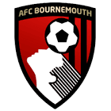

|  | Bournemouth FC |
| Ethnic | English |
| Job | English Football Club |
| Desc | xxxx |
Affiliation
| Location | England |
: 2019 06 13 Bournemouth are about to embark on their fifth Premier League campaign and their fixtures for the 2019-20 season have been confirmed
2019 06 15 Retrieve
[Bournemouth have sought to clarify their position when it comes to Ryan Fraser’s future] Much has been written and spoken about the future of Ryan Fraser, as his contract with AFC Bournemouth heads into its final 12 months. As is the club’s policy, details regarding contract negotiations or transfer activity are kept confidential and do not enter the public domain. However, following some recent reports I felt it was imperative to speak publicly and provide balanced clarity on the situation.
The offer of a new long-term contract has been on the table for Ryan for some time. In September 2018, at the request of Ryan’s representative, negotiations were paused to allow the player to focus entirely on his football. He went on to have an outstanding season, with seven goals and 13 assists helping the club secure a fifth successive season of Premier League football. During that time, I have been - and continue to be - in regular dialogue with Ryan’s representative, and have made it clear to both him and the player that our contract offer remains on the table. Quite simply, Ryan is a fantastic player and an integral part of our squad. We look forward to welcoming Ryan back to us next month after a well-earned break, upon which he can focus on having another standout season for AFC Bournemouth.
: 2019 07 02 Atlanta United have secured the signing of United States international Emerson Hyndman on loan for the remainder of the season, the MLS side have announced. The Bournemouth midfielder will be eligible to feature for the reigning MLS champions when the league’s secondary transfer window opens July 9
: 2019 07 08 Aston Villa have confirmed the signing of Tyrone Mings from Bournemouth.
: 2019 07 12 Callum Wilson has signed a new four-year contract to end speculation he could leave Bournemouth.
: 2019 07 21 Sheffield United have broken their transfer record for the third time in a month to sign striker Lys Mousset from Bournemouth.
: 2019 07 29 Bournemouth have signed Danish midfielder Philip Billing from relegated Huddersfield Town for a reported £15 million
: 2019 08 06 Liverpool winger Harry Wilson has completed a season-long loan move to Bournemouth. Bournemouth have paid a £2.5 million loan fee for Wilson, with another £500,000 due in bonuses depending on performance
: 2019 08 06b Harry Arter aiming for promotion to Premier League after joining Fulham on initial loan from Bournemouth
2020 03 13 Retrieve
[Bournemouth have announced that first team goalkeeper Artur Boruc and four staff members have placed themselves into self-isolation ahead of their scheduled meeting with Crystal Palace on Saturday] This is a precautionary measure as, at this stage, none have tested positive for Coronavirus. The club continues to monitor the situation closely and to take suitable measures to ensure the wellbeing of its employees and supporters. Players from Leicester and Chelsea have also been affected so far, with more expected to follow in the coming hours and days
2020 04 01 Retrieve
[Bournemouth boss Eddie Howe becomes first Premier League manager to take pay cut during coronavirus crisis] There is no script for moments like this. No tactics and no set plays to find a winning formula. But as a board we are continually looking at ways to ensure the future of the club and our employees is protected when the season returns. With this in mind, the club’s chief executive Neill Blake, first team technical director Richard Hughes, manager Eddie Howe and assistant manager Jason Tindall have all taken significant, voluntary pay cuts for the entirety of this uncertain time. We have also advised a number of staff across all areas of the club that they will be temporarily furloughed, as a result of the ongoing pandemic. Throughout the entirety of this time, [furloughed employees] will continue to receive their full salary, with the club committing to topping up each furloughed employee’s wages to 100 per cent of their normal pay, while claiming back 80 per cent of their wages up to a maximum of £2,500 per month, as per government guidelines
2020 04 14 Retrieve
[Bournemouth follow Liverpool and Tottenham in reversing furlough decision] Earlier this month we announced that a number of staff at AFC Bournemouth were being temporarily furloughed, and that we would utilise the Government’s Coronavirus Job Retention Scheme. These measures were not taken lightly, given the operational pressures placed on clubs in such uncertain times. However well-placed our intentions were, we are aware of criticisms levelled at Premier League clubs applying for this scheme. We have listened to our supporters and have reversed our decision to furlough these employees. We, as a board of directors, will ensure that the club can continue to operate while the season is suspended, and we will not be applying for the Coronavirus Job Retention Scheme
2020 05 24 Retrieve
[Premier League confirms two more coronavirus cases as Bournemouth reveal player has tested positive] The Premier League can today confirm that on Tuesday 19 May, Thursday 21 May and Friday 22 May, 996 players and club staff were tested for COVID-19. Of these, two have tested positive from two clubs. Players or club staff who have tested positive will now self-isolate for a period of seven days. For the second round of testing, the number of tests available to each club was increased from 40 to 50. Previously, 748 players and club staff were tested for COVID-19 on 17-18 May, with six testing positive from three clubs. The six who tested positive in the first round of testing are not included in the figures for 19-22 May, as they are still within their seven-day self-isolation period. The Premier League is providing this aggregated information for the purposes of competition integrity and transparency. No specific details as to clubs or individuals will be provided by the League and results will be made public after each round of testing
2020 05 24b Retrieve
[The Premier League announced on Saturday that the second round of coronavirus tests] AFC Bournemouth can confirm that one of its players has tested positive for Covid-19, following the club’s second round of testing. Medical confidentiality means the player’s name will not be disclosed, and the club asks for this to be respected. In line with Premier League protocols regarding positive tests, he will self-isolate for a period of seven days before being tested again at a later date
2020 05 24c Retrieve
[Premier League confirms two more coronavirus cases as Bournemouth reveal player has tested positive] AFC Bournemouth can confirm that one of its players has tested positive for Covid-19, following the club’s second round of testing. Medical confidentiality means the player’s name will not be disclosed, and the club asks for this to be respected. In line with Premier League protocols regarding positive tests, he will self-isolate for a period of seven days before being tested again at a later date. Following strict adherence of the Premier League’s return to training regulations, the club’s training ground remains a safe working environment for players and backroom staff, who will continue to be tested for Covid-19 twice per week
2020 06 17 Retrieve
[Arsenal-linked Ryan Fraser turns down short-term Bournemouth extension] Simon Francis, Andrew Surman, Artur Boruc and Charlie Daniels have agreed short-term contract extensions to cover the remaining nine games of the 2019/20 season. The quartet will prove a boost to Eddie Howe and his squad as the Cherries prepare for the return of the Premier League later this week. Francis, who is club captain, has played the most prominent role this season with 18 appearances in all competitions, whilst vice-captain Surman has featured on nine occasions. Goalkeeper Boruc has been named on the bench 29 times this season, while full-back Daniels is continuing his recovery from a long-term knee injury. Winger Ryan Fraser has declined to sign a short-term contract extension. The Cherries restart their Premier League campaign on Saturday 20th June, hosting Crystal Palace at Vitality Stadium. The game is the first-ever Premier League match to be broadcast on the BBC